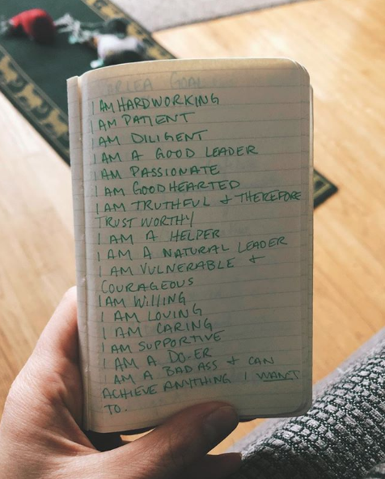

What Does Success Look Like?
The truth is, I am scared of what will happen when I hit my goals...
The reality is it’s SO easy to make it happen, but I keep letting my fear get in the way. Every day I have to consciously choose to not let my fear do my decision making.
So why am I holding myself back? What would it mean for me to be successful as an entrepreneur? I would be HELPING people reach all their health goals, and be able to watch them hit every milestone through my guidance. I would never have to work for another shitty boss who takes advantage of me, and my time. I would be able to stay at home with fur babies, & spend as much quality time as humanly possible with my partner (because we’re that obnoxious and enjoy spending all our time together). I would also have financial freedom.
Why do we let the fear of success keep us in our “comfort zone”? Is our comfort zone really all that comfortable? Or is it just easier to not have to rise to the occasion & show up for yourself, and your dreams?
I've had to make the decision to show up for myself. and you can too! If you haven’t hit your health goals in the past 8 months, do something about it already. Stop wishing, stop saying you want it, & act on it. Join the movement, and watch everything align in your life. It is for me; why can’t it for you?
Words of Empowerment
An excersise of "I am statements"
One of the most important vitals of this coaching business is personal development. In my team’s Side Hustle to Success Group from last month, we were all given a task to list out our “I am” statements for why we would be / are good coaches.
It made me realize that our natural tendency is to say “I can’t” or “I want”, because anything else would mean we have to put work in & live up to our word. When you say “I can” or “I am”, you’re putting your intentions out into the universe; but actions will ALWAYS speak louder than words. You HAVE to follow though. Unfortunately, saying it out loud - or just thinking it - doesn’t make it happen.
I often say that my goal is to empower women through my health and wellness coaching, and provide them the same tools that I was given to change my life. I AM doing this, but not nearly on the scale that I want to. I want to help women find their strength, to lead happier and healthier lives because they DESERVE it. YOU DESERVE IT.
One of the most important vitals of this coaching business is personal development. Pictured below is my list of “I am” statements. They apply to why I deserve to be happy, & healthy, not just why I’m a good coach. • I know you’re worthy of happiness, I know you deserve to live a healthy, fulfilling, & supportive life. But, it’s important that YOU acknowledge that - no matter where you are in this life - you are worthy. What are your “I am” statements?
When You Are Consumed in Doubt
Inhale confidence, exhale doubt.
It wasn’t too long ago that I was so consumed in the doubts I had about myself. I doubted my worth; my ability; my relationships; my reason to keep living. The reason I became a coach is because I found a community of people that understood what it meant to be full of doubt, & how it effected their relationship with their bodies. When I said that I struggled looking in the mirror, there were women who understood. When I opened up about my experience with rape, they supported me. When I admitted to binging after experiencing a trigger with my #PTSD , they encouraged me to do better the next day. They never judged; they supported.
THAT’s why I do what I do. I strive to be a support system for those struggling, but are ready to do the work required make a change. I fell in love with the process of growth because I LEANED into the challenge & the community was there the entire time. I’m eager to help others get there by providing the same tools I had in this journey.
I’m not saying these workouts cured my doubt, or my depression. Because we all know that stuff is FAR more complicated. I’m saying the workouts gave me the platform to build the confidence I used to dream of having. And the women in the communities I’ve grown to love fostered growth
I hope you are ready to grow with me by bringing out your best self and working together to live a healthy lifestyle!